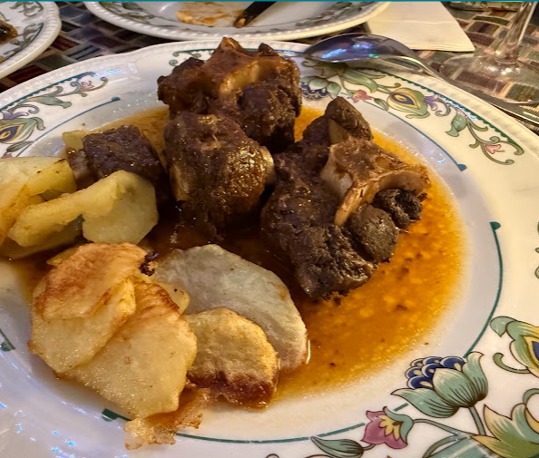
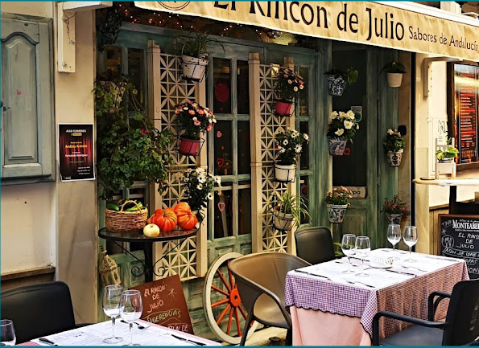
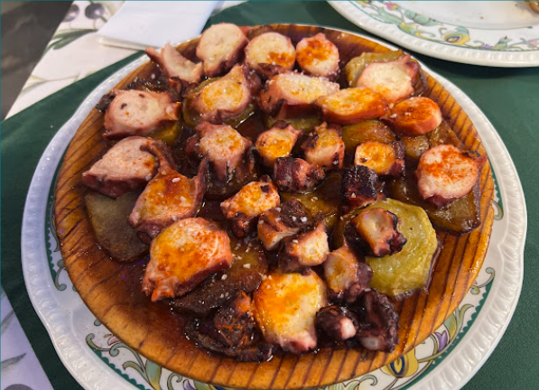
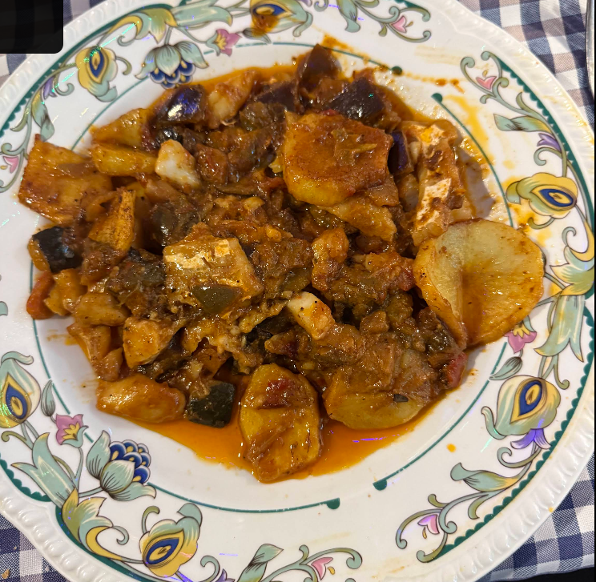
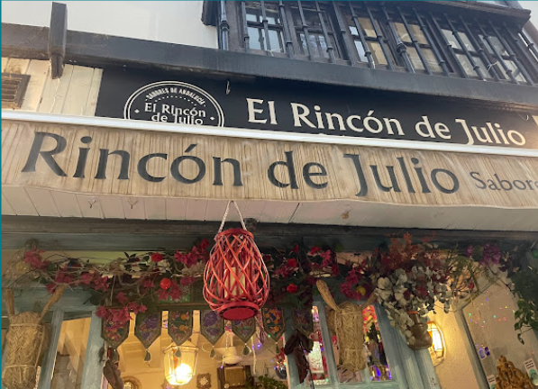
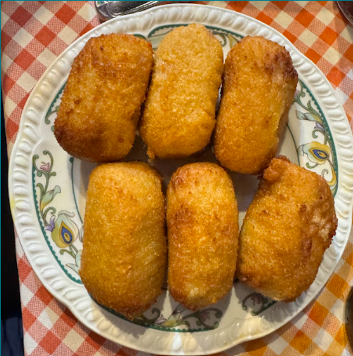
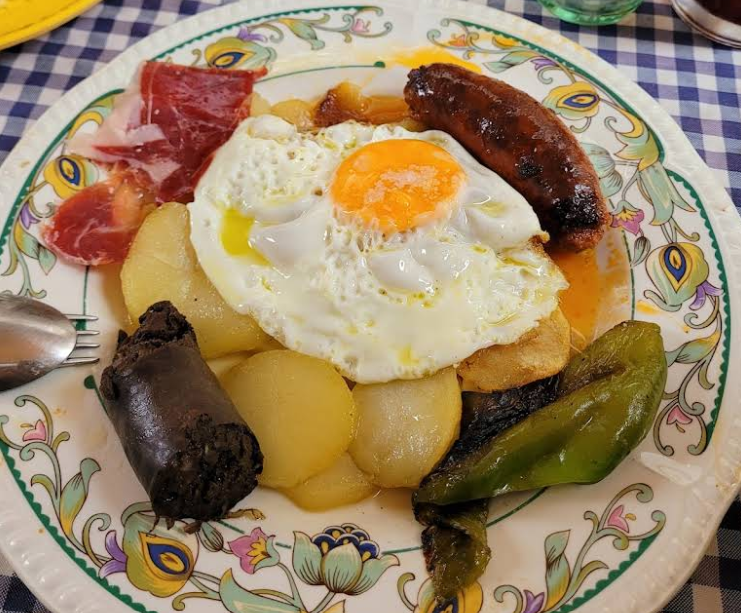

Rabo de toro
Estofado lento hasta que la carne se deshace, con su salsa de vino y patatas a lo pobre. Un clásico irrenunciable.

Sabores de Andalucía
Guisos lentos, producto de la tierra y recetas de siempre. Un rincón con encanto donde comer como en casa, con el sabor auténtico del sur.
Nuestros platos estrella
Los platos por los que vuelven nuestros clientes, elaborados cada día con mimo y sin prisa.

Estofado lento hasta que la carne se deshace, con su salsa de vino y patatas a lo pobre. Un clásico irrenunciable.

Pulpo tierno sobre cama de patata, con aceite de oliva virgen y un buen golpe de pimentón. Sencillo y perfecto.

Lomo de bacalao sobre pisto de verduras de temporada, cocinado a fuego lento. Pura cocina de cuchara.

La casa
El Rincón de Julio nace del amor por la cocina de siempre: esa que se hace despacio, con producto bueno y recetas heredadas. Entre flores, mantelitos de cuadros y el bullicio amable de la terraza, aquí se viene a disfrutar sin reloj.
Croquetas caseras como las de la suegra, guisos de cuchara, vinos de la tierra y un trato cercano. Sabores de Andalucía, en estado puro.
100%
Casero
Cocina
De la tierra
Terraza
Con encanto
Nuestra carta
Una selección de la carta. Los platos marcados con ★ son nuestras especialidades.
Galería


Reservas y contacto
Reserva por teléfono y te atendemos al momento. Para grupos grandes, mejor con un poco de antelación.
Teléfono / Reservas
615 13 29 30Dirección
C. Navas, 27 · Local bajo
Centro, 18009 Granada
Horario
Lunes a viernes
12:30–15:00 · 19:30–22:00
Sábado y domingo
Cerrado